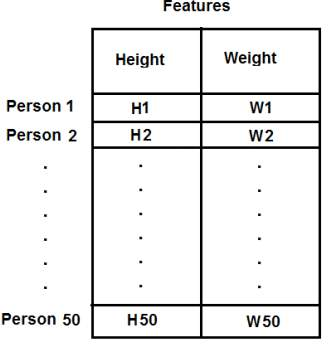

Table Of Contents
Previous topic
Understanding K-Means Clustering

Understanding K-Means Clustering
- Learn to use cv2.kmeans() function in OpenCV for data clustering
samples : It should be of np.float32 data type, and each feature should be put in a single column.
nclusters(K) : Number of clusters required at end
- criteria : It is the iteration termination criteria. When this criteria is satisfied, algorithm iteration stops. Actually, it should be a tuple of 3 parameters. They are ( type, max_iter, epsilon ):
- 3.a - type of termination criteria : It has 3 flags as below:
cv2.TERM_CRITERIA_EPS - stop the algorithm iteration if specified accuracy, epsilon, is reached. cv2.TERM_CRITERIA_MAX_ITER - stop the algorithm after the specified number of iterations, max_iter. cv2.TERM_CRITERIA_EPS + cv2.TERM_CRITERIA_MAX_ITER - stop the iteration when any of the above condition is met.
3.b - max_iter - An integer specifying maximum number of iterations.
3.c - epsilon - Required accuracy
attempts : Flag to specify the number of times the algorithm is executed using different initial labellings. The algorithm returns the labels that yield the best compactness. This compactness is returned as output.
flags : This flag is used to specify how initial centers are taken. Normally two flags are used for this : cv2.KMEANS_PP_CENTERS and cv2.KMEANS_RANDOM_CENTERS.
- compactness : It is the sum of squared distance from each point to their corresponding centers.
- labels : This is the label array (same as ‘code’ in previous article) where each element marked ‘0’, ‘1’.....
- centers : This is array of centers of clusters.
Now we will see how to apply K-Means algorithm with three examples.
Consider, you have a set of data with only one feature, ie one-dimensional. For eg, we can take our t-shirt problem where you use only height of people to decide the size of t-shirt.
So we start by creating data and plot it in Matplotlib
import numpy as np
import cv2
from matplotlib import pyplot as plt
x = np.random.randint(25,100,25)
y = np.random.randint(175,255,25)
z = np.hstack((x,y))
z = z.reshape((50,1))
z = np.float32(z)
plt.hist(z,256,[0,256]),plt.show()
So we have ‘z’ which is an array of size 50, and values ranging from 0 to 255. I have reshaped ‘z’ to a column vector. It will be more useful when more than one features are present. Then I made data of np.float32 type.
We get following image :
Now we apply the KMeans function. Before that we need to specify the criteria. My criteria is such that, whenever 10 iterations of algorithm is ran, or an accuracy of epsilon = 1.0 is reached, stop the algorithm and return the answer.
# Define criteria = ( type, max_iter = 10 , epsilon = 1.0 )
criteria = (cv2.TERM_CRITERIA_EPS + cv2.TERM_CRITERIA_MAX_ITER, 10, 1.0)
# Set flags (Just to avoid line break in the code)
flags = cv2.KMEANS_RANDOM_CENTERS
# Apply KMeans
compactness,labels,centers = cv2.kmeans(z,2,None,criteria,10,flags)
This gives us the compactness, labels and centers. In this case, I got centers as 60 and 207. Labels will have the same size as that of test data where each data will be labelled as ‘0’,‘1’,‘2’ etc. depending on their centroids. Now we split the data to different clusters depending on their labels.
A = z[labels==0]
B = z[labels==1]
Now we plot A in Red color and B in Blue color and their centroids in Yellow color.
# Now plot 'A' in red, 'B' in blue, 'centers' in yellow
plt.hist(A,256,[0,256],color = 'r')
plt.hist(B,256,[0,256],color = 'b')
plt.hist(centers,32,[0,256],color = 'y')
plt.show()
Below is the output we got:
In previous example, we took only height for t-shirt problem. Here, we will take both height and weight, ie two features.
Remember, in previous case, we made our data to a single column vector. Each feature is arranged in a column, while each row corresponds to an input test sample.
For example, in this case, we set a test data of size 50x2, which are heights and weights of 50 people. First column corresponds to height of all the 50 people and second column corresponds to their weights. First row contains two elements where first one is the height of first person and second one his weight. Similarly remaining rows corresponds to heights and weights of other people. Check image below:

Now I am directly moving to the code:
import numpy as np
import cv2
from matplotlib import pyplot as plt
X = np.random.randint(25,50,(25,2))
Y = np.random.randint(60,85,(25,2))
Z = np.vstack((X,Y))
# convert to np.float32
Z = np.float32(Z)
# define criteria and apply kmeans()
criteria = (cv2.TERM_CRITERIA_EPS + cv2.TERM_CRITERIA_MAX_ITER, 10, 1.0)
ret,label,center=cv2.kmeans(Z,2,None,criteria,10,cv2.KMEANS_RANDOM_CENTERS)
# Now separate the data, Note the flatten()
A = Z[label.ravel()==0]
B = Z[label.ravel()==1]
# Plot the data
plt.scatter(A[:,0],A[:,1])
plt.scatter(B[:,0],B[:,1],c = 'r')
plt.scatter(center[:,0],center[:,1],s = 80,c = 'y', marker = 's')
plt.xlabel('Height'),plt.ylabel('Weight')
plt.show()
Below is the output we get:
Color Quantization is the process of reducing number of colors in an image. One reason to do so is to reduce the memory. Sometimes, some devices may have limitation such that it can produce only limited number of colors. In those cases also, color quantization is performed. Here we use k-means clustering for color quantization.
There is nothing new to be explained here. There are 3 features, say, R,G,B. So we need to reshape the image to an array of Mx3 size (M is number of pixels in image). And after the clustering, we apply centroid values (it is also R,G,B) to all pixels, such that resulting image will have specified number of colors. And again we need to reshape it back to the shape of original image. Below is the code:
import numpy as np
import cv2
img = cv2.imread('home.jpg')
Z = img.reshape((-1,3))
# convert to np.float32
Z = np.float32(Z)
# define criteria, number of clusters(K) and apply kmeans()
criteria = (cv2.TERM_CRITERIA_EPS + cv2.TERM_CRITERIA_MAX_ITER, 10, 1.0)
K = 8
ret,label,center=cv2.kmeans(Z,K,None,criteria,10,cv2.KMEANS_RANDOM_CENTERS)
# Now convert back into uint8, and make original image
center = np.uint8(center)
res = center[label.flatten()]
res2 = res.reshape((img.shape))
cv2.imshow('res2',res2)
cv2.waitKey(0)
cv2.destroyAllWindows()
See the result below for K=8: